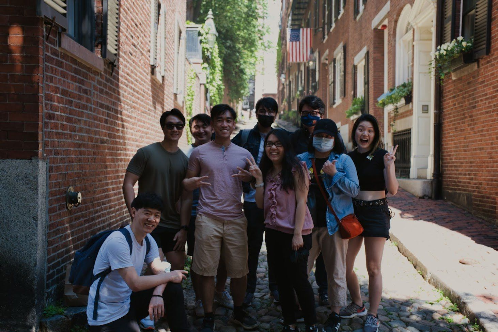

building an amazing community.
one member, one event, one day at a time!
it was your typical cold boston winter, when a group of friends had a spark of an idea for a place to bring together the asian community. that spark fully blossomed in the summertime and we’ve been growing bigger and faster ever since!

who? what?
aob aims to build up and bring together the asian community here in boston. we’re like a big group of friends you never knew you had! whether you grew up here, just moved, or are simply looking for a space where you feel at home, we’re here to connect, support, and grow together. our community thrives on shared experiences, cultural pride, and friendships that go beyond just being "asian"—because we know that identity is broad, complex, and worth celebrating in all its forms.
how?
we believe that strong communities are built through meaningful connections, and the best way to make those happen is by bringing people together. that’s why we host everything from casual meetups to big social events, organize volunteering opportunities to give back, and create spaces where conversations can flow naturally. whether it’s a game night, a cultural celebration, or just a place to chat, we’re always finding new ways to help people meet, bond, and grow together.
why?
being asian in boston—and in the u.s. in general—comes with a unique mix of cultures, traditions, and experiences. we believe in the power of a shared identity, where we can celebrate what makes us different while embracing what connects us. aob is a space where we can be unapologetically ourselves, bond over the things that make us feel at home, and share our culture with the larger community. whether it’s food, language, or just knowing someone gets it, we’re here to build that space together.
danielle
founder
hi everyone! excited to kick off intros! 🤗 i’ve lived in boston pretty much my whole life, but went to college in upstate ny and spent a year abroad in korea. I currently work at an architecture and design firm. I enjoy planning events and meeting new people in the area, and I love seeing our asian community in boston grow. 💗 always down for trying a new dinner spot and grabbing dessert🧋
chris
admin
hello everyone~ I've lived in boston for most of my life. I studied maths in school and work as a swe!. I have a shiba inu named chimaek (@chimaek.inu on Instagram), she's sometimes a little rat. I'm really excited to see the community growing knowing how hard of a time I originally had when making friends in boston
nick
event coordinator
hi! I'm nick, I currently run a bar in mission hill called tavern of tales. I've lived in boston 9 years now, and originally came here for school (bu). I'm an theatrical audio engineer & sound designer. I have a beautiful 2 year old german shepherd called celeste. excited to be more involved in the community and meet more people. always down to meet in person for drinks or online for valorant (if you carry me) or other co op games.
montira
event coordinator
montira is super cool!
kelly
marketing
kelly is super cool too!